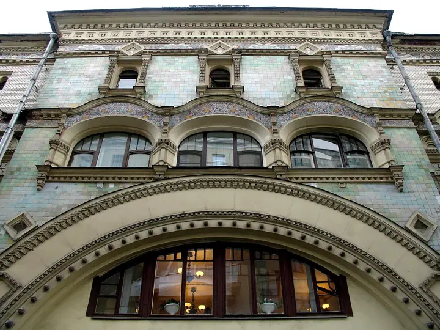

Фото: NVO, CC BY-SA 3.0 · Wikimedia Commons
Изразцовый дом во дворе · ЦАО
Саввинское подворье
Сказочный терем в изразцах, спрятанный во дворе за сталинским фасадом Тверской: в 1939 году дом целиком передвинули вглубь квартала. Проход — через арку дома 6; двор жилой, снимайте тихо.
- ₽ · до 1 500 ₽ на человека
- Новое в каталоге
Позвать сюда: Саввинское подворьеОткрыть в каталоге: Саввинское подворьеМаршрут до места: Саввинское подворье
Адрес и детали
- Адрес
- Тверская ул., 6, стр. 6 (вход через арку)
Открыть на Яндекс Картах (в новой вкладке) - Метро
- м. Охотный ряд
- Округ
- Центр (ЦАО)
- Цена
- до 1 500 ₽ на человека
- Проверено
- работает — проверили в ноябре 2026
Входит в подборки
Похожие рядом
Что ещё рядом
Как позвать
- Выбери план, место или событие — в карточке адрес, цены и маршрут в Яндекс Картах.
- Нажми «Позвать сюда» — соберётся приглашение-игра для свидания или голосование для компании.
- Отправь ссылку в любой мессенджер: тебе ответят, а компания отметит, куда и когда может. Бесплатно и без регистрации.